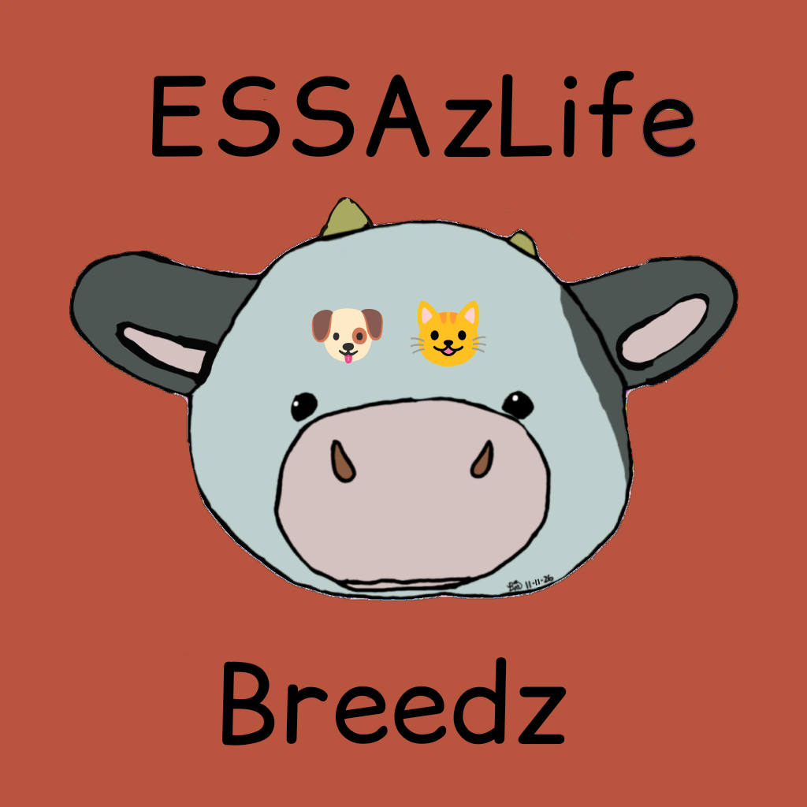

Meet the animals
Tap an ESSA to learn about the real animal it represents.
Breed traits are general tendencies, not guarantees. Wild animals belong in appropriate natural habitats.

Breedz🌎Tap an ESSA to learn about the real animal it represents.
Breed traits are general tendencies, not guarantees. Wild animals belong in appropriate natural habitats.